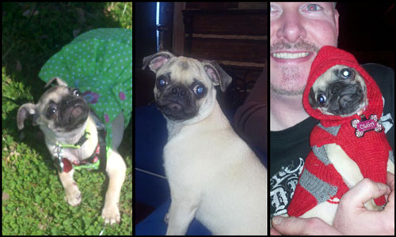

May 2013  Hi, my name is Olga Mae Herndon. I am the adorable Pug living in the city of Harrisburg. Though, I might be the craziest small pug you’ll meet, but I still love to crawl into your arms and give you a warm loving hug. But if I see the top of your head all bets are off, I will be licking you clean. My father’s provide my healthy lifestyle of clothing. I am girl with fine taste, until my father makes me watch a football game. UGH! I hate wearing that jersey, but I know my daddy loves his team. That is why my name is Olga Mae. He loves the Georgia Bulldogs mascot, Uga, but since my other daddy did not want a boy they got me, Olga Mae. So if you see out and about in Harrisburg, please say hi or ruff, oh who am I kidding, if you see in your face wanting to play, say hi! I would love to play with you. Oh! Ruff me on Facebook at Olga Mae Herndon. |